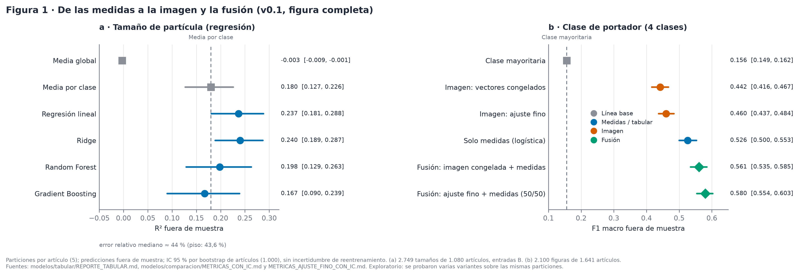
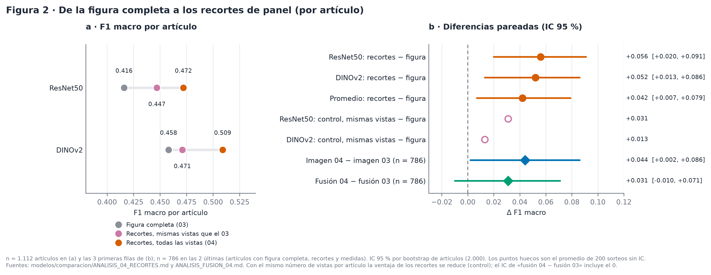
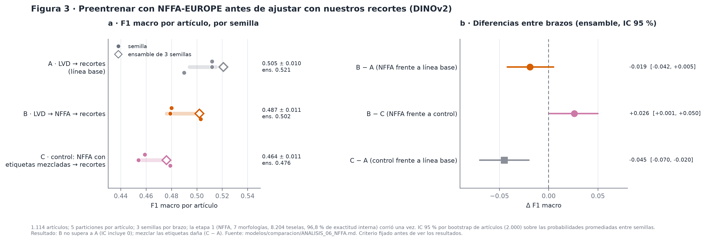

EVALUACIÓN · LÍNEAS BASE · LÍMITES
Modelos y limitaciones
Se comparan escalones simples con líneas base explícitas. El rendimiento describe estas particiones por artículo; no demuestra desempeño fuera de este conjunto.
La predicción de imagen y la etiqueta del Atlas son resultados distintos y se muestran por separado. Los resultados son exploratorios; la nota del JSON y los intervalos se conservan junto a las métricas.
De las medidas a la imagen: resultados en tres figuras
Las figuras conservan separadas las muestras de cada experimento. Pulsa una imagen para ampliarla; los archivos descargables mantienen el texto y las cifras de la fuente.









Fuente: figuras/modelos/fig_modelos_{1,2,3}_es. Las cifras de muestras distintas se presentan por separado.
Modelo final de la demo · ensamble de tres semillas
Cargando ficha del modelo final…
Tamaño · modelos tabulares
La métrica es R² sobre el logaritmo del tamaño. La línea base resaltada usa la media por clase.
Ver tabla de modelos de tamaño
Cargando resultados…
Clase de portador · tres clases
Exactitud y F1 macro con IC 95 % por bootstrap de artículos. La fila de clase mayoritaria es la línea base de esta tarea.
Ver tabla de tres clases
Cargando resultados…
Clase de portador · cuatro clases
Esta tarea tiene otra distribución y no se debe comparar directamente con la configuración de tres clases. La línea base está resaltada.
Ver tabla de cuatro clases
Cargando resultados…
Clasificación a partir de imagen
Línea base de la v0.1 (figura completa)
Esta es la referencia del Atlas v0.1; se conserva separada de los experimentos posteriores con recortes.
Ver métricas históricas de imagen v0.1
Cargando métricas de imagen…
Resultados preliminares con recortes de panel
Evaluación por artículo. El aumento observado se debe en buena parte a que los recortes aportan más vistas por artículo; con el mismo número de vistas, la diferencia de exactitud baja a +0,006 (ResNet50) y +0,008 (DINOv2). Las filas de diferencia expresan cambios absolutos de proporción (por ejemplo, +0,042 equivale a +4,2 puntos porcentuales), no porcentajes relativos. El IC de la diferencia fusión 04 − fusión 03 incluye el 0.
Ver comparación de recortes · 1.112 artículos
Cargando análisis de recortes…
Ver comparación de fusión · 786 artículos
Cargando análisis de fusión…
Fuentes: modelos/comparacion/ANALISIS_04_RECORTES.json y modelos/comparacion/ANALISIS_FUSION_04.json.
Experimento: preentrenar con NFFA-EUROPE no mejoró
Cargando resultados A/B/C…
Cómo leer los resultados y sus límites
Se comparan modelos de lo simple a lo complejo, siempre frente a una línea base. La separación por artículo evita que figuras del mismo artículo se repartan entre entrenamiento y prueba; no descarta reutilización de datos entre artículos distintos.
Los modelos de tamaño usan medidas ya realizadas, como zeta y PDI, y faltan proporciones y condiciones de preparación. Explican este conjunto de datos; no permiten anticipar con fiabilidad el tamaño de una formulación nueva. En la clasificación, las clases mezclan composición y uso: «nanomaterial» se solapa con «inorgánico».
La «Clase del artículo (base de datos)» y la «Predicción del modelo» se muestran por separado. Las probabilidades del clasificador no están calibradas. Solo tiene sentido usar la demo con micrografías de partículas; no hay validación externa.
Los intervalos de confianza remuestrean predicciones por artículo. No recogen toda la incertidumbre de reentrenar ni la selección entre variantes. Los resultados históricos de figura completa, los recortes, la fusión y NFFA usan muestras distintas; sus cifras no se deben mezclar en una sola comparación.
La muestra de control de calidad asistido por IA abarca 20 artículos. Su alcance no equivale a una auditoría de todo el corpus ni a una validación externa del modelo. La auditoría de figuras y de cajas se documenta por separado en Cómo se construyó y en D8.
Lectura editorial integrada de Bryan: texto fuente (producto/web_contenido/modelos_y_limitaciones.md). Sus referencias a figura completa corresponden a la v0.1; el modelo final y NFFA se actualizan con las fuentes de esta página.